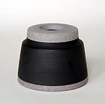
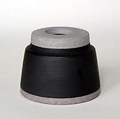
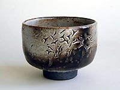

| Martin
Schlotz - Gefäße
Walter H. Lokau

Martin Schlotz' Gefäße
entstehen auf der Töpferscheibe. Allerdings liegen ihm verklärende
Aspekte dieser traditionellen Arbeitstechnik – eine vorgeblich
in unsauberen Spuren oder anachronistischen Imitationen zum Ausdruck
kommende Wahrheit der Hand, des Materials, des Verfahrens, der Geschichte
usw. – oder Manierismen modischer wie technischer Art ganz
fern. Ihm geht es um das Problem moderner Gefäßkeramik
überhaupt: Die Suche nach der aus sich selbst entwickelten
und ihrer Zeit gemäßen Form des Gefäßes jenseits
seiner Zweckbestimmung. Als bewußter Erbe einer schon jahrzehntelangen
Entwicklung moderner Keramik gelangt er in seiner rücksichtslosen
Besinnung auf die Sache des Gefäßes zu unverwechselbar
radikalen Gestaltungen, die in der Konsequenz ihrer formalen Modernität
keiner Anleihen oder Zitate bedürfen: „Sie sind Gefäße
ohne spekulative Anbiederung“ – eine glücklich-polemische
Formulierung Volker Ellwangers, mit der dieser das Werk seines Lehrers
Jan Bontjes van Beek einst charakterisierte, die aber nicht weniger
auf sein eigenes Schaffen und a fortiori auf die Arbeit seines Schülers
Martin Schlotz zutrifft.
  
Martin Schlotz arbeitet in thematischen Reihen. In Variationen
wird ein bestimmter Formtyp von Gefäß durchgearbeitet:
Exakt gedrehte, kräftige Turmformen aus Steinzeugton auf breiter
Standfläche, in hart umbrochener Gliederung hochgebaut, oder
starkwandige Schalen von ebenfalls deutlich tektonischem Bau, auf
engem Fuß zu ausladendem Volumen erweitert, hochrandig weit
geöffnet. Die ideelle Ausgangsform ist meist der Zylinder,
der – ins Konische verjüngt oder geweitet, selten sacht
gewölbt – Stufe um Stufe in solchen Modulationen aufeinandergefügt,
komponiert wird, wiewohl die Arbeiten niemals aus einzelnen Teilen
montiert werden. Dem Primat der Form zum Trotz herrscht hierbei
kein fertiger Entwurf, kein Bauplan. Die durchaus unelegante, manchmal
fast technoide Strenge der autonomen Form täuscht über
die gelassene, fast spielerische Offenheit ihrer Entstehung hinweg:
Im Moment des Entstehens leitet einzig das ästhetische Urteil
die zu treffenden Entscheidungen. Der Winkel der Öffnung oder
der Schließung des Rundes, die Schärfe eines Umbruchs,
die Höhe eines Abschnittes, die Proportionen der Partien zueinander...
– all dies augenblicklich Schritt um Schritt zu bestimmen
bleibt dem Gefühl überlassen, das am Ende die Gesamtform
– fremd mitunter auch dem, der sie gemacht – gutheißen
kann oder sie verwerfen muß. Die Variation zeugt von der Unabschließbarkeit
des Problems: Das absolute Gefäß wird nie und nimmer.
  
Die entstandenen Formen werden ihrer Anmutung entsprechend monochrom
mit Glasur überfangen, selten jedoch zur Gänze bedeckt.
Schräg geführtes Tauchen der geschrühten Gefäße
läßt den Scherben im Fußbereich oftmals offenliegen.
Indem die einzelnen Varianten unterschiedliche Bedeckung mit derselben
Glasur erfahren, wird dem Maß von Verhüllung und Blöße
der Form nachgespürt: Weniger kann hier mehr, sehr wenig alles
sein. Martin Schlotz setzt die verschiedenen Glasuren so souverän
als nur möglich ein: Jahrelang erarbeitete und akkurat aufgezeichnete
Versuchsreihen erlauben ihm den Zugriff auf ein reiches Repertoire
der heiklen Materie, die im Reduktionsbrand gern ein undankbares
Eigenleben führt. Die immer ruhige, oft von delikatem, ihrer
Dicke wegen in die Tiefe springendem Craquelée durchzogene
und manchmal mit reoxidierten Flächen feuerbeleckte Glasur
wird niemals Effekt oder Selbstzweck: Opak oder luzide, matt oder
glänzend, dick oder dünn aufgetragen, unterlegt mit Engobe
oder eingefärbt – Glasur steht im Dienst der Form. Für
das Verhältnis von Form und Glasur gilt wiederum, daß
es in seiner Wirkung nicht letztlich vorhersehbar ist. Auch beim
Glasurauftrag folgen Arbeitsentscheidungen lediglich einer nie zu
Regel und Rezept gerinnenden Ästhetik. Erst das durch den reduzierenden
Brand bei 1300°C im Gasofen gegangene Gefäß offenbart
vollends die Richtigkeit dieser Entscheidungen oder erweist seine
Ungeratenheit. Schönheit ist nicht zu machen: Sie ist ein Geschenk.
 
Neben den glasierten Steinzeuggefäßen beschäftigen
Martin Schlotz in den letzten Jahren Arbeiten aus selbstaufbereiteten,
schwer zu verarbeitenden Porzellanmassen. Schamottiert und eingefärbt,
graurosa oder olivgrün, bleibt deren Oberfläche unglasiert.
Nur horizontale Bänder von dunklen Engoben oder hellen Porzellanauflagen
gliedern diese Arbeiten, setzen einzelne Partien des Gefäßes
voneinander ab oder vermitteln über Umbrüche in der Silhouette
hinweg. An mancher Arbeit wird ein Gefäßabschluß
aus reinweißer Porzellanmasse auf den schamotte-rauhen Körper
aufgedreht. Aus diesem Ineinander von Form und Farbe erwächst
eine immense Steigerung kompositorischer Komplexität der ja
einfach erscheinenden Gefäße. Die Komposition aus der
Form eines Gefäßes und seiner konzeptuell-materialen
Farbigkeit muß sich ergeben aus den ungeheuerlich vervielfachten
Möglichkeiten der Zusammenstellung der vermeintlich beschränkenden
formalen und chromatischen Elemente: Der scheinbar minimierte Spielraum
dehnt sich in die Unendlichkeit der Nuance. Die Abfolge der Arbeitsentscheidungen,
deren Ergebnis das schließlich da-stehende Gefäß
ist, bleibt diesem bei genauer Betrachtung durch all seine Schärfe
und Exaktheit hindurch ablesbar – seltsam ahnbar aber wird
zugleich eine Unzahl anderer möglich gewesener Abfolgen von
Entscheidungen, eine Unmenge nun eben nicht da stehender Gefäße.
Gerade durch ihre so unerbittlich hart, schier notwendig scheinende
Entschiedenheit hindurch erzittern die Gefäße von Martin
Schlotz vor offenkundiger Unwahrscheinlichkeit: Aufforderung jetzt
an unser ästhetisches Empfinden, die einzelne Form zu beurteilen
– sie kritisch auswählend im Geiste zu berichtigen –
oder sie ausschließlich begeistert zu lieben in ihrer bewundernswert
folgerichtigen Eigenlogik.
Walter H. Lokau, Berlin
Copyright Walter H. Lokau und Museum Eckernförde, Dr. Beitz
More Featured Artists
|


{kind=link}
{kind=link}